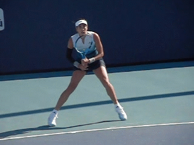
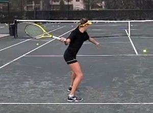
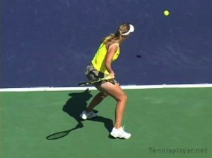
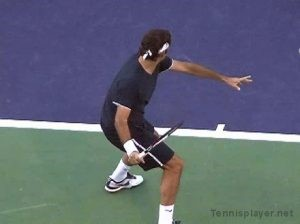
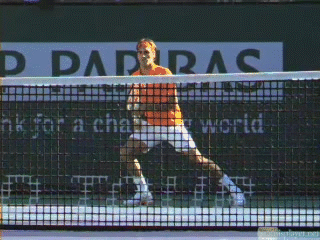
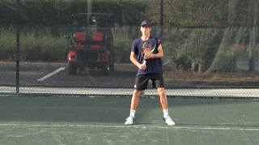
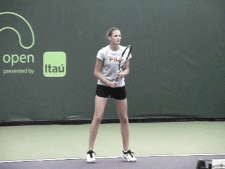
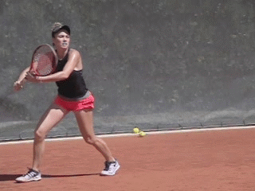
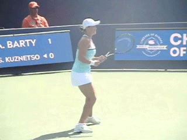

Have Tennis Coaches Failed Female Athletes?¶
Dr. Brian Gordon

Garbine Muguruza's forehand is typical of many top women on tour.
Many followers of professional tennis have noticed systematic differences between the way men and women execute strokes. Much has been made of this in recent times especially in certain sectors of the tennis world.
In 2010 I published several articles on Tennisplayer highlighting the different swing types on the forehand. (Click Here.)
The types were divided into three general classifications. The primary apparent difference between the types relates to the position of the hitting arm and racquet at the end of the back swing.
The images below show this instant for the three types described. The Type III has commonly been referred to as the ATP style and the Type II the WTA style. The Type I swing is normally seen only in juniors during the early development stages.

Type I: Early Development

Type II: WTA

Type III: ATP
Why Does it Matter?
The main focus of the Tennisplayer.net articles was not to show that differences exist, but rather for the first time to explain the biomechanical properties of the ATP style forehand. I pointed out several biomechanical (kinematic and kinetic) advantages of the ATP forehand discovered through my applied and basic research over the previous decade.
Based on this information I think most unbiased observers would conclude that for purely mechanical, but also tactical reasons, the ATP forehand is superior to the other types. Anecdotal evidence is that all or almost all top male players use some variation of the ATP forehand I described. The interesting question is why not the female players? Why in general do the women (girls) hit their forehands differently than the men (boys)?

Virtually all top male players hit some version of the ATP forehand.
Early Development
The main reason, in my opinion, relates to the coaching that occurs in the junior development stages. Based on my experience I think it is reasonable to identify two stages of critical early development.
The initial stage is from roughly 4-8 years of age. This is a critical stage for developing motor pathways. The secondary stage is from roughly 9-13 years of age. This period is critical for refining the motor pathways. Of course there is considerable individual variation but I contend that coaching decisions made during these early developmental stages have a significant impact on the final product.
Initial Stage
Early stage stroke development for the genders appears to be pretty uniform. The emphasis is generally on looping type swings (“The candy cane"). This is the genesis for the Type I swing on the forehand.
Young children will generally choose the biggest swing possible to produce racket head speed and the Type I swing is just that. Institutionalized instruction tends to favor fun over skills and while understandable (and perhaps necessary) it certainly isn't optimal for developing advanced mechanics.
Secondary Stage
It is in the second stage of development that gender differentiation seems to be become more evident. Male players in general will start to decrease the size of the loop at a faster rate than female players eventually arriving at something close to the ATP style swing.

Typically male junior players will decrease the size of the loop more and sooner.
Role models and peer emulation probably play a role. But the main reason for this is that boys face more speed and spin on incoming balls at an earlier age. Therefore they must adapt their swings accordingly. Concurrent with this is the influence of coaching, which presumably advocates smaller swing shapes as the speed and difficulty of the game increases.
Possible Explanations
But why would the same coaching not be applied to the girls? It is my experience the tennis establishment has never really embraced or even understood the notion that females could possibly hit the ATP style forehand.
Those that have followed my work know that I strongly believe all female players should hit the ATP style forehand and further that it should be taught from day one. This position is controversial and as a result I have been privy to a wide array of reactions.
There are at least three reasons for the resistance to my logic.
Coaching Confusion
Despite probably good intentions, many coaches are not well versed in the technical intricacies of stroke mechanics and particularly ATP style strokes. They are usually former players teaching based on what they did or learned and there is nothing wrong with that--we all need some basis for our instruction. The problem is without a solid background in the scientific basis of mechanics these coaches probably won't deviate from common belief or develop the expertise to implement changes to establishment edicts.
Coaching Dogma
In my career I've had to change my thinking many times as new information became available. It is not easy to admit you were mistaken but it is necessary to innovate and improve.
Coaches, like anyone else, have pride and in general will resist challenges to their methods. This is particularly true of well-known or very experienced coaches that have espoused certain views for a very long time. But as John Yandell has said, “I'd rather be accurate than consistent."

Are games based systems holding back the evolution of female forehand technique?
Development Philosophy
Currently there are differences in the philosophies of developmental programs. Extensive stroke mechanics emphasis is inconsistent with the “game based" systems. But I believe it is unlikely that such systems will produce substantive innovation in the evolution of female stroke technique.
The confusion and dogmatism in coaching often lead to this argument. Rather than concede there may be a better way it is more convenient to simply point to current highly ranked players, or players these coaches have developed, and conclude the success of the players validates their mechanics approach.
Informed contrarians might, while giving credit, also wonder if these players could have been even better. To coin a phrase, are these coaches just producing better apples or creating the orange?
Girls Can Do It
Given available information about the advantages of the ATP style forehand, and given it is called the ATP style because the best (male) players in the world use it without exception, it is difficult to understand why females shouldn't. The only possible explanation would be that girls are not physically capable of hitting it and/or it will expose them to injury.
The contention is males and females are physiologically different--this is obvious. The assumption is that the ATP style forehand requires a lot more strength--this is highly debatable. The conclusion is females should not be instructed in the technique because they won't be able to hit it. This is a cop out because the evidence suggests otherwise.

Girls can do it.
Additional Thoughts
Since I first published the original treatise of the mechanics of the Type III (ATP style) forehand many have expressed doubt about its viability for female athletes. The argument about strength struck me as demonstrably bogus. That it somehow increases the propensity to injury is just as preposterous.
Therefore based on this doubt, I took it as a personal quest to demonstrate female athletes could use the technique. In the ensuing decade I've built the technique into every girl that dared to train on my court.
I applaud the parents of these players who ignored the detractors and did not buy into the establishment view the “girls can't do it." My anecdotal evidence suggests that in fact girls can learn the stroke and generally develop it faster and at a higher level than my boys of similar age (any age starting at 6 years).
And I think it is fair to say that we are starting to see an evolution of the female forehand on wider scale--an evolution seen for men at least a couple of decades ago. The ATP style forehand is starting to be more evident on the junior tournament circuit. Many college players are using versions of it. On the pro tour the women's forehands are becoming shorter (between Type II and Type III) with several younger players using the Type III forehand outright.

We are starting to see an evolution of the female forehand.
This is hardly surprising as the women's game is becoming ever faster and athletes are, of course, the ultimate innovators. I also know there are some coaches that share my views about the future of women's tennis.
It is important to note that while this article has dealt with the forehand I have made similar arguments with equivalent fervor on the serve and the backhand. It is clear to me that certain technical attributes and developmental methods are just better – only my opinion based on a lot of research and experience.
So is the current technical landscape for female athletes a failure of the player development establishment, simply a disagreement among coaches, or part of the natural evolution of a subset of the playing population? I suppose history will have to judge this one, but I've gone on the record to predict the WTA style forehand will be non-existent in possibly five years but certainly within ten.

Dr. Brian Gordon has changed the understanding of the biomechanics of high level tennis technique. His Biomechanically Engineered Stroke Technique (BEST) is the only empirically based stroke mechanics system in the world, growing from three decades of both academic and applied on court research. He is a founder of the Tennis Center for Performance Research in Miami, Florida, which is creating a new paradigm for player development. The center has assembled an unprecedented group of specialists with cutting edge knowledge across the entire range of tennis performance.
To visit his website, Click Here!
Top contact him directly, Click Here!